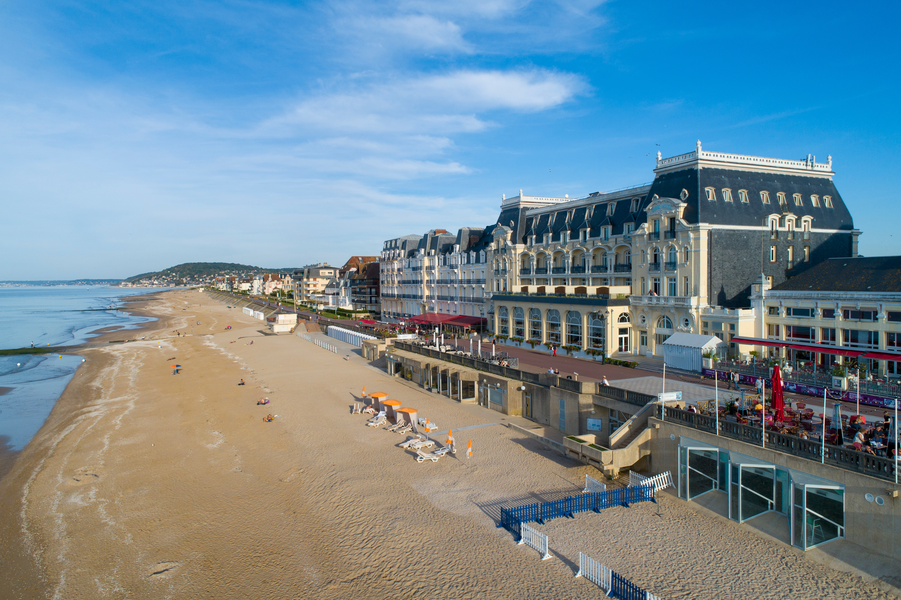
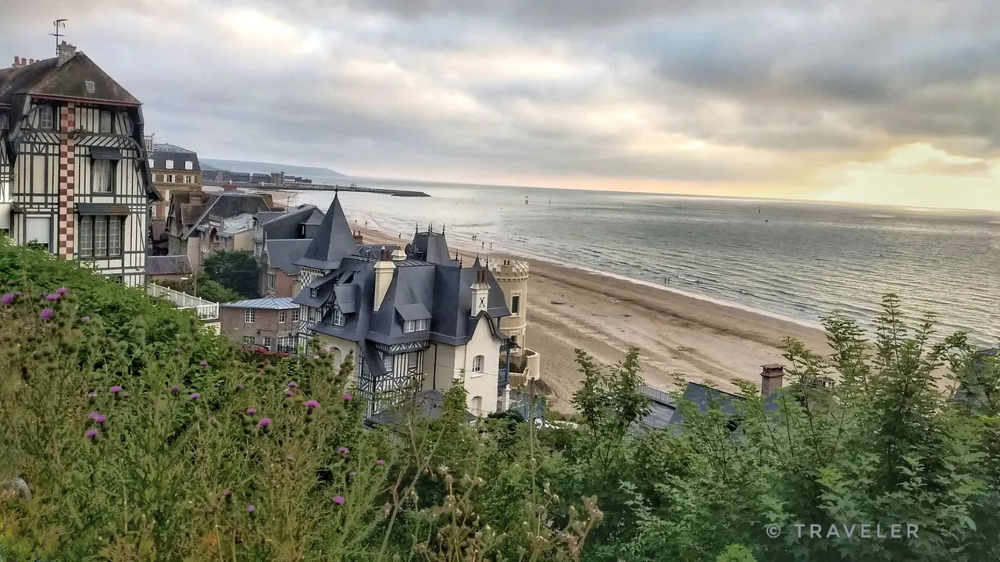

🏖️ Plage
Plage de Cabourg
Une grande plage idéale pour profiter du littoral.
Nos bonnes adresses, plages, activités et coups de coeur pour profiter pleinement de la Côte Fleurie.
Nos sélections

Une grande plage idéale pour profiter du littoral.

Une brasserie sur la Promenade Marcel Proust, pour déguster des plats locaux et profiter de la vue sur la mer.

La Vue des Roches Noires - Route de la Corniche offre un point de vue panoramique captivant le long du littoral spectaculaire de Trouville-sur-Mer